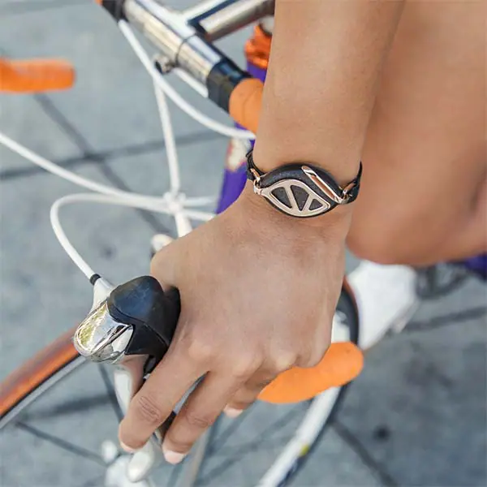

Bellabeat Case Study

Bellabeat Smart Device Wellness Analysis
This project explores how Bellabeat customers use their smart wellness devices using public Fitbit-style activity and sleep data. The goal was to identify patterns in user behavior and suggest ways Bellabeat could increase engagement and product value.
Steps I Took
- Imported raw activity, sleep, and weight datasets and checked for structure.
- Cleaned the data and formatted timestamps.
- Joined activity + sleep tables to align by user and date.
- Created summary tables comparing weekday vs weekend behavior.
- Visualized steps, calories, and sleep relationships.
Key Insights
- Higher step counts → more calories burned but no guarantee of more sleep.
- Users more active on weekdays than weekends.
- Inconsistent usage suggests potential engagement drop-off.
- Personalized reminders could improve engagement.
Tools Used
Excel, R, data wrangling, visualization, descriptive statistics.
Deliverables
- Cleaned datasets
- Summary tables
- Visual dashboards
- Slide deck of findings
Project Information
- Category: Health & Wellness Analytics
- Tools: Excel, R, Data Cleaning, Visualization
- Course: Google Data Analytics Capstone